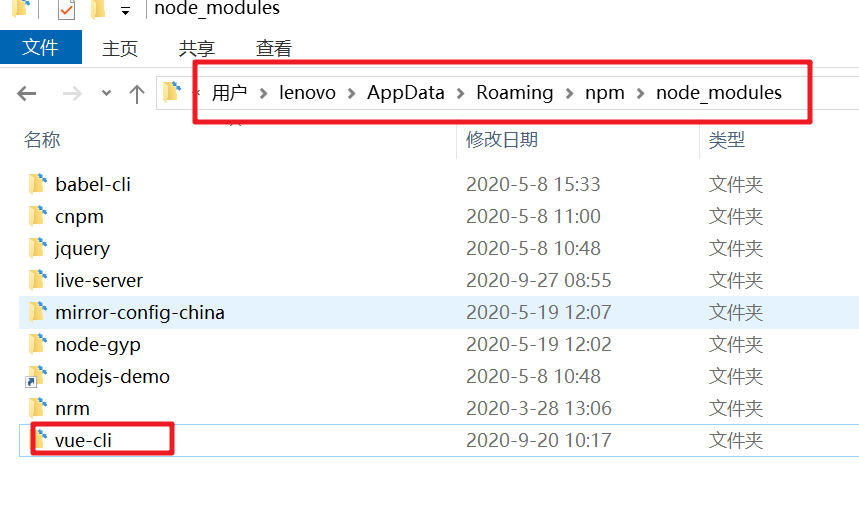
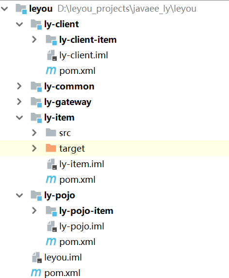

01、学习目标
- 了解项目基本信息
- 独立搭建后台管理系统
- 清楚项目基本结构
02、了解电商：项目分类
主要从需求方、盈利模式、技术侧重点这三个方面来看它们的不同
1）传统项目
各种企业里面用的管理系统（ERP、HR、OA、CRM、物流管理系统、SAAS。）
- 需求方：公司、企业内部
- 盈利模式：项目本身卖钱
- 技术侧重点：业务功能
2）互联网项目
门户网站、电商网站：baidu.com（搜索引擎）、qq.com（门户）、taobao.com、jd.com （电商） ……
- 需求方：广大用户群体 网易云音乐
- 盈利模式：虚拟币、增值服务、广告收益……
- 技术侧重点：网站性能、业务功能
而我们今天要聊的就是互联网项目中的重要角色：电商。
03、了解电商：电商行业特点
1）谈谈双十一
双十一是电商行业的一个典型代表，从里面我们能看出电商的普遍特点：
==2014年==

2016双11开场30分钟，创造每秒交易峰值17.5万笔，每秒支付峰值12万笔的新纪录。菜鸟单日物流订单量超过4.67亿，创历史新高。
==2019年==


2）技术特点
从上面的数据我们不仅要看到钱，更要看到背后的技术实力。正是得益于电商行业的高强度并发压力，促使了BAT等巨头们的技术进步。电商行业有些什么特点呢？
- 技术范围广
- 技术新
- 要求双高：
- 高并发（分布式、静态化技术、CDN服务、缓存技术、异步并发、池化、队列）
- 高可用（集群、负载均衡、限流、降级、熔断）
- 数据量大（分库分表）
- 业务复杂
3）常见电商模式
电商行业的一些常见模式：
- B2C：商家对个人，如：亚马逊、当当等 京东自营 乐优
- C2C平台：个人对个人，如：闲鱼、拍拍网、ebay 、淘宝
- B2B平台【B2B2B】：商家对商家，如：阿里巴巴、八方资源网等
- O2O：线上和线下结合，如：饿了么、电影票、团购等
- P2P：在线金融，贷款，如：网贷之家、人人聚财等。
- B2C平台【B2B2C】：天猫、京东商家入驻、一号店等 （企业商家入驻）
04、乐优商城介绍：系统架构
1）项目介绍
- 乐优商城是一个全品类的电商购物网站（B2C）。
- 用户可以在线购买商品、加入购物车、下单、秒杀商品
- 可以评论已购买商品
- 管理员可以在后台管理商品的上下架、促销活动
- 管理员可以监控商品销售状况
- 客服可以在后台处理退款操作
- 希望未来3到5年可以支持千万用户的使用
2）系统架构图

3）各种对象的说明
VO（View Object）：视图对象，用于展示层，它的作用是把某个指定页面（或组件）的所有数据封装起来。
==DTO（Data Transfer Object）==：数据传输对象，这个概念来源于J2EE的设计模式，原来的目的是为了EJB的分布式应用提供粗粒度的数据实体，以减少分布式调用的次数，从而提高分布式调用的性能和降低网络负载，但在这里，我泛指用于展示层与服务层之间的数据传输对象。
DO（Domain Object）：领域对象，就是从现实世界中抽象出来的有形或无形的业务实体。
PO（Persistent Object）：持久化对象，它跟持久层（通常是关系型数据库）的数据结构形成一一对应的映射关系，如果持久层是关系型数据库，那么，数据表中的每个字段（或若干个）就对应PO的一个（或若干个）属性。
BO（Business Object）：业务对象，一个BO可能包含一个或多个PO
DAO（Data Access Object） ：数据访问对象，主要用来封装对DB的访问（CRUD操作）
POJO（Plain Ordinary Java Object ） ： 无规则简单java对象，一个中间对象，可以转化为PO、DTO、VO
pojo： 用于封装一张表的数据
dto/vo：用于封装多张表的数据
05、乐优商城介绍：开发文档说明
采用前后端绝对分离的方式，前端独立在node中运行，后台采用java。那么开发中如何保证前后端开发的东西是一致的？
没错就是我们的api文档了，具体参考资料中开发文档一项。
1）状态码约定
| HTTP状态码（HTTP Status Code） | |
|---|---|
| 1xx（临时响应） | |
| 表示临时响应并需要请求者继续执行操作的状态代码。 | |
| 代码 | 说明 |
| 100 | （继续） 请求者应当继续提出请求。 服务器返回此代码表示已收到请求的第一部分，正在等待其余部分。 |
| 101 | （切换协议） 请求者已要求服务器切换协议，服务器已确认并准备切换。 |
| 2xx | （成功） |
| 表示成功处理了请求的状态代码。 | |
| 代码 说明 | |
| 200 | （成功） 服务器已成功处理了请求。 通常，这表示服务器提供了请求的网页。 |
| 201 | （已创建） 请求成功并且服务器创建了新的资源。 |
| 202 | （已接受） 服务器已接受请求，但尚未处理。 |
| 203 | （非授权信息） 服务器已成功处理了请求，但返回的信息可能来自另一来源。 |
| 204 | （无内容） 服务器成功处理了请求，但没有返回任何内容。 |
| 205 | （重置内容） 服务器成功处理了请求，但没有返回任何内容。 |
| 206 | （部分内容） 服务器成功处理了部分 GET 请求。 |
| 3xx （重定向） | |
| 表示要完成请求，需要进一步操作。 通常，这些状态代码用来重定向。 | |
| 代码 | 说明 |
| 300 | （多种选择） 针对请求，服务器可执行多种操作。 服务器可根据请求者 (user agent) 选择一项操作，或提供操作列表供请求者选择。 |
| 301 | （永久移动） 请求的网页已永久移动到新位置。 服务器返回此响应（对 GET 或 HEAD 请求的响应）时，会自动将请求者转到新位置。 |
| 302 | （临时移动） 服务器目前从不同位置的网页响应请求，但请求者应继续使用原有位置来进行以后的请求。 |
| 303 | （查看其他位置） 请求者应当对不同的位置使用单独的 GET 请求来检索响应时，服务器返回此代码。 |
| 304 | （未修改） 自从上次请求后，请求的网页未修改过。 服务器返回此响应时，不会返回网页内容。 |
| 305 | （使用代理） 请求者只能使用代理访问请求的网页。 如果服务器返回此响应，还表示请求者应使用代理。 |
| 307 | （临时重定向） 服务器目前从不同位置的网页响应请求，但请求者应继续使用原有位置来进行以后的请求。 |
| 4xx（请求错误） | |
| 这些状态代码表示请求可能出错，妨碍了服务器的处理。 | |
| 代码 | 说明 |
| 400 | （错误请求） 服务器不理解请求的语法。 |
| 401 | （未授权） 请求要求身份验证。 对于需要登录的网页，服务器可能返回此响应。 |
| 403 | （禁止） 服务器拒绝请求。 |
| 404 | （未找到） 服务器找不到请求的网页。 |
| 405 | （方法禁用） 禁用请求中指定的方法。 |
| 406 | （不接受） 无法使用请求的内容特性响应请求的网页。 |
| 407 | （需要代理授权） 此状态代码与 401（未授权）类似，但指定请求者应当授权使用代理。 |
| 408 | （请求超时） 服务器等候请求时发生超时。 |
| 409 | （冲突） 服务器在完成请求时发生冲突。 服务器必须在响应中包含有关冲突的信息。 |
| 410 | （已删除） 如果请求的资源已永久删除，服务器就会返回此响应。 |
| 411 | （需要有效长度） 服务器不接受不含有效内容长度标头字段的请求。 |
| 412 | （未满足前提条件） 服务器未满足请求者在请求中设置的其中一个前提条件。 |
| 413 | （请求实体过大） 服务器无法处理请求，因为请求实体过大，超出服务器的处理能力。 |
| 414 | （请求的 URI 过长） 请求的 URI（通常为网址）过长，服务器无法处理。 |
| 415 | （不支持的媒体类型） 请求的格式不受请求页面的支持。 |
| 416 | （请求范围不符合要求） 如果页面无法提供请求的范围，则服务器会返回此状态代码。 |
| 417 | （未满足期望值） 服务器未满足”期望”请求标头字段的要求。 |
| 5xx（服务器错误） | |
| 这些状态代码表示服务器在尝试处理请求时发生内部错误。 这些错误可能是服务器本身的错误，而不是请求出错。 | |
| 代码 | 说明 |
| 500 | （服务器内部错误） 服务器遇到错误，无法完成请求。 |
| 501 | （尚未实施） 服务器不具备完成请求的功能。 例如，服务器无法识别请求方法时可能会返回此代码。 |
| 502 | （错误网关） 服务器作为网关或代理，从上游服务器收到无效响应。 |
| 503 | （服务不可用） 服务器目前无法使用（由于超载或停机维护）。 通常，这只是暂时状态。 |
| 504 | （网关超时） 服务器作为网关或代理，但是没有及时从上游服务器收到请求。 |
| 505 | （HTTP 版本不受支持） 服务器不支持请求中所用的 HTTP 协议版本。 |
2）乐优服务名称与端口
| 模块 | 服务ID | 端口 | 路由规则 | 域名 |
|---|---|---|---|---|
| 注册中心 | ly-registry | 8848 | ||
| 网关 | api-gateway | 10010 | api前缀：/api | api.leyou.com |
| 商品微服务 | item-service | 8081 | /item/** | |
| 图片上传服务 | upload-service | 8082 | /upload/** | |
| 搜索服务 | search-service | 8083 | /search/** | |
| 页面静态化服务 | page-service | 8084 | ||
| 用户中心服务 | user-service | 8085 | /user/** | |
| 短信服务 | sms-service | 8086 | ||
| 授权服务 | auth-service | 8087 | /auth/** | |
| 购物车服务 | cart-service | 8088 | /cart/** | |
| 订单服务 | order-service | 8090 | /order/** 、/pay/** | |
| 后台管理web | nginx反向代理 | 9001 | manage.leyou.com | |
| 前端页面 | nginx反向代理 | 9002 | www.leyou.com | |
| 图片 | nginx反向代理 | image.leyou.com | ||
| 网关 | ningx反向代理 | 10010 | api.leyou.com |
3）API文档（*）

06、乐优商城介绍：前后端功能说明
前端页面
整个乐优商城从用户角度来看，可以分为两部分：后台管理、前台门户。
**==后台管理==**：
- 后台系统主要包含以下功能：
- 商品管理（***），包括商品分类、品牌、商品规格等信息的管理
- 销售管理，包括订单统计、订单退款处理、促销活动生成等
- 用户管理，包括 用户控制、冻结、解锁等
- 权限管理，整个网站的权限控制，采用JWT鉴权方案，对用户及API进行权限控制
- 统计，各种数据的统计分析展示 AdminLTE
- …
- （Vuetify）
- 后台系统会采用前后端分离开发，而且整个后台管理系统会使用Vue.js框架搭建出单页应用（SPA）。
- 预览图：

- 后台系统主要包含以下功能：
==前台门户==
- 前台门户面向的是客户，包含与客户交互的一切功能。例如：
- 搜索商品
- 展示商品详情
- 加入购物车
- 下单
- 评价商品等等
- 前台门户面向的是客户，包含与客户交互的一切功能。例如：
前台系统我们会使用Nuxt(服务端渲染)结合Vue完成页面开发。出于SEO优化的考虑，我们将不采用单页应用。

无论是前台门户、还是后台管理页面，都是前端页面，我们的系统采用前后端分离方式，因此前端会独立部署，不会在后端服务出现静态资源。
后端微服务
无论是前台还是后台系统，都共享相同的微服务集群，包括：
商品微服务：商品及商品分类、品牌、库存等的服务
搜索微服务：实现搜索功能
订单微服务：实现订单相关
购物车微服务：实现购物车相关功能
用户服务：用户的登录注册、用户信息管理等功能
短信服务：完成各种短信的发送任务
支付服务：对接各大支付平台
授权服务：完成对用户的授权、鉴权等功能
Nacos注册中心
Spring Cloud Gateway网关服务
Spring Cloud Config配置中心
07、乐优前端：后台管理系统技术选型
1）介绍
我们的后台管理系统采用前后端分离开发，而且整个后台管理系统会使用Vue.js框架搭建出单页应用（SPA）。
前端技术：
- 基础的HTML、CSS、JavaScript（基于ES6标准）
- JQuery
- Vue.js 2.0
- 基于Vue的UI框架：Vuetify
- 前端构建工具：WebPack，项目编译、打包工具
- 前端安装包工具：NPM
- Vue脚手架：Vue-cli【需要安装此软件才能构建出vue工程】
- Vue路由：vue-router
- ajax框架：axios
- 基于Vue的富文本框架：quill-editor
注意：一定不要忘记利用资料中的命令安装vue-cli
安装vue-cli：
npm install vue-cli -g
如果速度慢（卡住的情况）可以先把npm仓库设置为淘宝镜像，再来执行上面的安装命令：
npm config set registry https://registry.npm.taobao.org安装后：

2）什么是SPA
SPA，并不是去洗澡按摩，而是Single Page Application，即单页应用。整个后台管理系统只会出现一个HTML页面，剩余一切页面的内容都是通过Vue组件来实现。
我们的后台管理系统就是一个基于Vue的SPA的模式，其中的UI交互式通过一个名为Vuetify的框架来完成的。
注意：单页应用，不利于SEO。
3）Vuetify框架
Vuetify是一个基于Vue的UI框架，可以利用预定义的页面组件快速构建页面。有点类似BootStrap框架。
3.1为什么要学习UI框架
Vue负责的是虽然会帮我们进行视图的渲染，但是样式是有我们自己来完成。这显然不是我们的强项，因此后端开发人员一般都喜欢使用一些现成的UI组件，拿来即用，常见的例如：
- BootStrap
- LayUI
- EasyUI
- ZUI
然而这些UI组件的基因天生与Vue不合，因为他们更多的是利用DOM操作，借助于jQuery实现，而不是MVVM的思想。
而目前与Vue吻合的UI框架也非常的多，国内比较知名的如：
- element-ui：饿了么出品
- i-view：某公司出品
然而我们都不用，我们今天推荐的是一款国外的框架：Vuetify
官方网站：https://vuetifyjs.com/zh-Hans/

3.2为什么是Vuetify
有中国的为什么还要用外国的？原因如下：
- Vuetify几乎不需要任何CSS代码，而element-ui许多布局样式需要我们来编写
- Vuetify从底层构建起来的语义化组件。简单易学，容易记住。
- Vuetify基于Material Design（谷歌推出的多平台设计规范），更加美观，动画效果酷炫，且风格统一
这是官网的说明：

缺陷：
- 目前官网虽然有中文文档，但因为翻译问题，几乎不太能看。
3.3怎么用？
基于官方网站的文档进行学习：

我们重点关注UI components即可，里面有大量的UI组件，我们要用的时候再查看，不用现在学习，先看下有什么：


以后用到什么组件，就来查询即可。
08、乐优前端：后台管理系统使用说明
我们的后台管理系统就是基于Vue，并使用Vuetify的UI组件来编写的。
1）导入已有资源
后台项目相对复杂，为了有利于教学，我们不再从0搭建项目，而是直接使用课前资料中给大家准备好的源码：

我们解压缩，放到工作目录中：

让idea引入vue组件【idea的vue组件会自动使用本地电脑上的vue-cli构建vue工程】

如下图所示表示安装成功

然后在IDE中导入新的工程：

选中我们的工程：

这正是一个用vue-cli构建的单页应用：

2）运行项目
在控制台输入命令
npm run serve
发现默认的端口是9001。访问：http://localhost:9001
会自动进行跳转：

3）项目结构
开始编码前，我们先了解下项目的结构：
目录结构
首先是目录结构图：

可以看到，整个项目除了一个index.html外没有任何的静态页面。页面的切换都是靠一个个的vue组件的切换来完成的。这里的Vue组件称为单文件组件，就是后缀名为.vue的文件。
单文件组件
.vue文件是vue组件的特殊形式，在以前我们定义一个Vue组件是这样来写的：
const com = {
template:`
<div style="background-ground-color:red">
<h1>hello ...</h1>
</div>
`,
data(){
return {
}
},
methods:{
}
}
Vue.component("com", com);这种定义方式虽然可以实现，但是html、css、js代码混合在一起，而且在JS中编写html和css显然不够优雅。
而.vue文件是把三者做了分离：

页面菜单项
页面的左侧是我们的导航菜单：

这个菜单的文字信息，在项目的src目录下，有一个menu.js文件，是页面的左侧菜单目录：

内容：
const menus = [
{
action: "home",
title: "首页",
path:"/index",
items: [{ title: "统计", path: "/dashboard" }]
},
{
action: "apps",
title: "商品管理",
path:"/item",
items: [
{ title: "分类管理", path: "/category" },
{ title: "品牌管理", path: "/brand" },
{ title: "商品列表", path: "/list" },
{ title: "规格参数", path: "/specification" }
]
},
{
action: "people",
title: "会员管理",
path:"/user",
items: [
{ title: "会员统计", path: "/statistics" },
{ title: "会员管理", path: "/list" }
]
},
{
action: "attach_money",
title: "销售管理",
path:"/trade",
items: [
{ title: "交易统计", path: "/statistics" },
{ title: "订单管理", path: "/order" },
{ title: "物流管理", path: "/logistics" },
{ title: "促销管理", path: "/promotion" }
]
},
{
action: "settings",
title: "权限管理",
path:"/auth",
items: [
{ title: "权限管理", path: "/list" },
{ title: "角色管理", path: "/role" },
{ title: "人员管理", path: "/member" },
{ title: "服务管理", path: "/services" }
]
}
]
export default menus;菜单的组件
每一个菜单都对应一个组件，这些组件在项目的src/views/目录下：

那么，菜单是如何与页面组件对应的呢？src目录下有一个router.js，里面保存了页面路径与页面组件的对应关系：

核心部分代码：

当我们点击对应按钮，对应的组件就会展示在页面。
09、乐优微服务：数据库环境准备
乐优商城选择MySQL数据库，直接执行资料的sql脚本即可，但是要注意：必须是MySQL8.0.X版本！！！！！！

下载地址：https://dev.mysql.com/downloads/installer/
也可以使用我这边准备的

10、乐优微服务：技术选型
先准备后台微服务集群的基本架构
1）技术选型
后端技术：
- 基础的SpringMVC、Spring 5.0和MyBatis-Plus3
- Spring Boot 2.1.6版本
- Spring Cloud 稳定版Greenwich.SR2
- MyBatis Plus 3.1.0 （和通用Mapper非常相似）
- Redis-4.0
- RabbitMQ-3.4
- Elasticsearch-6.6.2
- nginx-1.10.2
- Thymeleaf
- JWT
2）开发环境
为了保证开发环境的统一，希望每个人都按照以下环境来配置：
- IDE：2017以上即可
- JDK：统一使用JDK1.8(***)
- 项目构建：maven3.3.x以上版本即可
11、乐优微服务：项目工程结构

12、乐优微服务：创建顶级父工程
创建统一的父工程：leyou，用来管理依赖及其版本，注意是创建project，而不是moudle

填写工程信息：

然后将pom文件修改成我这个样子：
<?xml version="1.0" encoding="UTF-8"?>
<project xmlns="http://maven.apache.org/POM/4.0.0"
xmlns:xsi="http://www.w3.org/2001/XMLSchema-instance"
xsi:schemaLocation="http://maven.apache.org/POM/4.0.0 http://maven.apache.org/xsd/maven-4.0.0.xsd">
<modelVersion>4.0.0</modelVersion>
<groupId>com.leyou</groupId>
<artifactId>leyou</artifactId>
<packaging>pom</packaging>
<version>1.0-SNAPSHOT</version>
<parent>
<groupId>org.springframework.boot</groupId>
<artifactId>spring-boot-starter-parent</artifactId>
<version>2.1.6.RELEASE</version>
<relativePath/>
</parent>
<properties>
<project.build.sourceEncoding>UTF-8</project.build.sourceEncoding>
<project.reporting.outputEncoding>UTF-8</project.reporting.outputEncoding>
<java.version>1.8</java.version>
<spring-cloud.version>Greenwich.SR2</spring-cloud.version>
</properties>
<dependencyManagement>
<dependencies>
<!-- springCloud -->
<dependency>
<groupId>org.springframework.cloud</groupId>
<artifactId>spring-cloud-dependencies</artifactId>
<version>${spring-cloud.version}</version>
<type>pom</type>
<scope>import</scope>
</dependency>
</dependencies>
</dependencyManagement>
</project>13、乐优微服务：搭建注册中心
1）说明
乐优商城项目的注册中心将选择时下最流行的Nacos。
Nacos有阿里巴巴出品，官网地址https://nacos.io/。
Nacos完全国产，中文api简单易懂，开箱即用，无缝整合dubbo和spring cloud，且久经双十一考验。
相对比已经停止维护的Spring Cloud Eureka，未来企业中会做何选择，相信大家心中已经有了答案！
2）下载Nacos服务
下载地址：https://github.com/alibaba/nacos/releases。
截至2020-07-17老师编修大概之时，Nacos官网有宣：“当前推荐的稳定版本为1.2.1”。
资料中已经为大家提高好了1.2.1的服务压缩包，位置如下：

3）启动Nacos注册中心
日常开发，我们暂不考虑Nacos的集群高可用，如有兴趣且时间充裕的同学，可自行百度了解，也可参考这篇博文：https://www.cnblogs.com/FlyAway2013/p/11201250.html
解压Nacos压缩包到一个没有中文的目录下：

进入bin目录，双击startup.cmd启动注册中心

启动后效果如下：

启动窗口中给大家提供了注册中心控制台访问地址，需输入默认用户名nacos密码nacos进行访问。

14、乐优微服务：创建common通用代码模块
有些工具类或通用的约定内容，我们希望各个微服务共享，因此需要创建一个工具模块：ly-common
1）创建common工程
使用maven来构建module：

结构如下：

2）引入工具类
选择如下图资料中红线圈中的工具类：

引入ly-common模块中：


3）添加所需依赖
<?xml version="1.0" encoding="UTF-8"?>
<project xmlns="http://maven.apache.org/POM/4.0.0"
xmlns:xsi="http://www.w3.org/2001/XMLSchema-instance"
xsi:schemaLocation="http://maven.apache.org/POM/4.0.0 http://maven.apache.org/xsd/maven-4.0.0.xsd">
<parent>
<artifactId>leyou</artifactId>
<groupId>com.leyou</groupId>
<version>1.0-SNAPSHOT</version>
</parent>
<modelVersion>4.0.0</modelVersion>
<artifactId>ly-common</artifactId>
<dependencies>
<dependency>
<groupId>org.springframework</groupId>
<artifactId>spring-web</artifactId>
</dependency>
<dependency>
<groupId>javax.servlet</groupId>
<artifactId>javax.servlet-api</artifactId>
</dependency>
<dependency>
<groupId>org.springframework.boot</groupId>
<artifactId>spring-boot-starter-logging</artifactId>
</dependency>
<dependency>
<groupId>com.fasterxml.jackson.core</groupId>
<artifactId>jackson-databind</artifactId>
</dependency>
<dependency>
<groupId>org.apache.commons</groupId>
<artifactId>commons-lang3</artifactId>
<version>3.4</version>
</dependency>
<dependency>
<groupId>org.projectlombok</groupId>
<artifactId>lombok</artifactId>
</dependency>
<dependency>
<groupId>joda-time</groupId>
<artifactId>joda-time</artifactId>
</dependency>
</dependencies>
</project>每个工具类的作用：
- BeanHelper：实现Bean属性的拷贝，把一个Bean的属性拷贝到另一个Bean，前提是其属性名一致或部分一致
- CookieUtils：实现cookie的读和写
- IdWorker：生成Id
- JsonUtils：实现实体类与Json的转换
- RegexUtils：常用正则校验
- RegexPattern：常用正则的字符串
15、乐优微服务：搭建网关
1）创建工程
与上面类似，选择maven方式创建Module，然后填写项目名称，我们命名为：ly-gateway

2）添加依赖
<?xml version="1.0" encoding="UTF-8"?>
<project xmlns="http://maven.apache.org/POM/4.0.0"
xmlns:xsi="http://www.w3.org/2001/XMLSchema-instance"
xsi:schemaLocation="http://maven.apache.org/POM/4.0.0 http://maven.apache.org/xsd/maven-4.0.0.xsd">
<parent>
<artifactId>leyou</artifactId>
<groupId>com.leyou</groupId>
<version>1.0-SNAPSHOT</version>
</parent>
<modelVersion>4.0.0</modelVersion>
<artifactId>ly-gateway</artifactId>
<dependencies>
<!--网关-->
<dependency>
<groupId>org.springframework.cloud</groupId>
<artifactId>spring-cloud-starter-gateway</artifactId>
</dependency>
<!--注册中心-->
<dependency>
<groupId>com.alibaba.cloud</groupId>
<artifactId>spring-cloud-starter-alibaba-nacos-discovery</artifactId>
<version>2.1.0.RELEASE</version>
</dependency>
<!--熔断器-->
<dependency>
<groupId>org.springframework.cloud</groupId>
<artifactId>spring-cloud-starter-netflix-hystrix</artifactId>
</dependency>
<dependency>
<groupId>com.leyou</groupId>
<artifactId>ly-common</artifactId>
<version>1.0-SNAPSHOT</version>
</dependency>
</dependencies>
<build>
<plugins>
<plugin>
<groupId>org.springframework.boot</groupId>
<artifactId>spring-boot-maven-plugin</artifactId>
</plugin>
</plugins>
</build>
</project>3）编写启动类
创建一个包：com.leyou，然后新建一个启动类：
ppackage com.leyou;
import org.springframework.boot.SpringApplication;
import org.springframework.boot.autoconfigure.SpringBootApplication;
import org.springframework.cloud.client.SpringCloudApplication;
import org.springframework.cloud.client.circuitbreaker.EnableCircuitBreaker;
import org.springframework.cloud.client.discovery.EnableDiscoveryClient;
/**
* 网关微服务
*/
/*@SpringBootApplication
@EnableDiscoveryClient // 开启服务注册
@EnableCircuitBreaker // 开启熔断器*/
@SpringCloudApplication
public class LyGatewayApplication {
public static void main(String[] args) {
SpringApplication.run(LyGatewayApplication.class,args);
}
}
4）提供网关的降级方法
package com.leyou.gateway.fallback;
import org.springframework.web.bind.annotation.RequestMapping;
import org.springframework.web.bind.annotation.RestController;
/**
* 服务降级方法
*/
@RestController // @Controller+@ResonseBody
public class FallbackController {
@RequestMapping("/fallback")
public String fallback(){
return "服务繁忙，请稍等...";
}
}
5）配置文件
server:
port: 10010
spring:
application:
name: api-gateway
cloud:
nacos:
discovery:
server-addr: 127.0.0.1:8848
gateway:
default-filters:
- name: Hystrix
args:
name: fallbackcmd
fallbackUri: forward:/fallback
hystrix:
command:
default:
execution:
isolation:
thread:
#设置API网关中路由转发请求的HystrixCommand执行超时时间
timeoutInMilliseconds: 500016、乐优微服务：提供pojo工具包父工程
1） 创建pojo模块父工程

2） 导入jar包
<?xml version="1.0" encoding="UTF-8"?>
<project xmlns="http://maven.apache.org/POM/4.0.0"
xmlns:xsi="http://www.w3.org/2001/XMLSchema-instance"
xsi:schemaLocation="http://maven.apache.org/POM/4.0.0 http://maven.apache.org/xsd/maven-4.0.0.xsd">
<parent>
<artifactId>leyou</artifactId>
<groupId>com.leyou</groupId>
<version>1.0-SNAPSHOT</version>
</parent>
<modelVersion>4.0.0</modelVersion>
<artifactId>ly-pojo</artifactId>
<dependencies>
<!--注意：千万不要启动器(starter标记)的包，只能导入核心包(core)-->
<dependency>
<groupId>com.baomidou</groupId>
<artifactId>mybatis-plus-core</artifactId>
<version>3.1.0</version>
</dependency>
<dependency>
<groupId>org.projectlombok</groupId>
<artifactId>lombok</artifactId>
</dependency>
</dependencies>
</project>17、 乐优微服务： 提供feign客户端工具包父工程
1） 创建feign客户端模块父工程

2）导入jar包
<?xml version="1.0" encoding="UTF-8"?>
<project xmlns="http://maven.apache.org/POM/4.0.0"
xmlns:xsi="http://www.w3.org/2001/XMLSchema-instance"
xsi:schemaLocation="http://maven.apache.org/POM/4.0.0 http://maven.apache.org/xsd/maven-4.0.0.xsd">
<parent>
<artifactId>leyou</artifactId>
<groupId>com.leyou</groupId>
<version>1.0-SNAPSHOT</version>
</parent>
<modelVersion>4.0.0</modelVersion>
<artifactId>ly-client</artifactId>
<!--统一导入子工程使用的包： 只能导入核心包，不能导入启动器-->
<dependencies>
<dependency>
<groupId>org.springframework.cloud</groupId>
<artifactId>spring-cloud-openfeign-core</artifactId>
</dependency>
<dependency>
<groupId>org.springframework</groupId>
<artifactId>spring-web</artifactId>
</dependency>
</dependencies>
</project>18、乐优微服务：搭建商品模块
既然是一个全品类的电商购物平台，那么核心自然就是商品。因此我们要搭建的第一个服务，就是商品微服务。其中会包含对于商品相关的一系列内容的管理，包括：
- 商品分类管理
- 品牌管理
- 商品规格参数管理
- 商品管理
- 库存管理
1）在ly-pojo父工程下创建item的pojo子模块

2）在顶级父工程下创建ly-item微服务

3）导入item模块所需的jar包
<?xml version="1.0" encoding="UTF-8"?>
<project xmlns="http://maven.apache.org/POM/4.0.0"
xmlns:xsi="http://www.w3.org/2001/XMLSchema-instance"
xsi:schemaLocation="http://maven.apache.org/POM/4.0.0 http://maven.apache.org/xsd/maven-4.0.0.xsd">
<parent>
<artifactId>leyou</artifactId>
<groupId>com.leyou</groupId>
<version>1.0-SNAPSHOT</version>
</parent>
<modelVersion>4.0.0</modelVersion>
<artifactId>ly-item</artifactId>
<dependencies>
<!--nacos客户端-->
<dependency>
<groupId>com.alibaba.cloud</groupId>
<artifactId>spring-cloud-starter-alibaba-nacos-discovery</artifactId>
<version>2.1.0.RELEASE</version>
</dependency>
<!--web环境-->
<dependency>
<groupId>org.springframework.boot</groupId>
<artifactId>spring-boot-starter-web</artifactId>
</dependency>
<!--数据库驱动-->
<dependency>
<groupId>mysql</groupId>
<artifactId>mysql-connector-java</artifactId>
</dependency>
<!--mybatis-plusd依赖-->
<dependency>
<groupId>com.baomidou</groupId>
<artifactId>mybatis-plus-boot-starter</artifactId>
<version>3.1.0</version>
</dependency>
<!--entity和dto-->
<dependency>
<groupId>com.leyou</groupId>
<artifactId>ly-pojo-item</artifactId>
<version>1.0-SNAPSHOT</version>
</dependency>
<!--通用工具-->
<dependency>
<groupId>com.leyou</groupId>
<artifactId>ly-common</artifactId>
<version>1.0-SNAPSHOT</version>
</dependency>
<!--测试-->
<dependency>
<groupId>org.springframework.boot</groupId>
<artifactId>spring-boot-starter-test</artifactId>
</dependency>
</dependencies>
<build>
<plugins>
<plugin>
<groupId>org.springframework.boot</groupId>
<artifactId>spring-boot-maven-plugin</artifactId>
</plugin>
</plugins>
</build>
</project>4）编写启动类
package com.leyou;
import org.mybatis.spring.annotation.MapperScan;
import org.springframework.boot.SpringApplication;
import org.springframework.boot.autoconfigure.SpringBootApplication;
import org.springframework.cloud.client.discovery.EnableDiscoveryClient;
/**
* 商品微服务
*/
@SpringBootApplication
@EnableDiscoveryClient
@MapperScan("com.leyou.item.mapper") //mybatis-plus扫描Mapper接口所在目录
public class LyItemApplication {
public static void main(String[] args) {
SpringApplication.run(LyItemApplication.class,args);
}
}
5）编写配置文件
server:
port: 8081
spring:
application:
name: item-service
datasource:
driver-class-name: com.mysql.cj.jdbc.Driver
url: jdbc:mysql:///leyou?serverTimezone=UTC&characterEncoding=utf8&useUnicode=true&useSSL=true
username: root
password: root
cloud:
nacos:
discovery:
server-addr: 127.0.0.1:8848
mybatis-plus:
type-aliases-package: com.leyou.item.pojo
configuration:
map-underscore-to-camel-case: true
logging:
level:
com.leyou: debug
6）在网关微服务配置文件中添加item微服务路由规则
server:
port: 10010
spring:
application:
name: api-gateway
cloud:
nacos:
discovery:
server-addr: 127.0.0.1:8848
gateway:
default-filters:
- name: Hystrix
args:
name: fallbackcmd
fallbackUri: forward:/fallback
routes:
- id: item-service # 路由id,可以随意写
# 代理的服务地址；lb表示负载均衡(从nacos中获取具体服务)
uri: lb://item-service
# 路由断言，可以配置映射路径
predicates:
- Path=/api/item/**
filters:
# 表示过滤1个路径，2表示两个路径，以此类推
- StripPrefix=2
hystrix:
command:
default:
execution:
isolation:
thread:
#设置API网关中路由转发请求的HystrixCommand执行超时时间
timeoutInMilliseconds: 50007）在ly-client父工程下创建item对外的feign接口子模块

导入jar包
<?xml version="1.0" encoding="UTF-8"?>
<project xmlns="http://maven.apache.org/POM/4.0.0"
xmlns:xsi="http://www.w3.org/2001/XMLSchema-instance"
xsi:schemaLocation="http://maven.apache.org/POM/4.0.0 http://maven.apache.org/xsd/maven-4.0.0.xsd">
<parent>
<artifactId>ly-client</artifactId>
<groupId>com.leyou</groupId>
<version>1.0-SNAPSHOT</version>
</parent>
<modelVersion>4.0.0</modelVersion>
<artifactId>ly-client-item</artifactId>
<dependencies>
<dependency>
<groupId>com.leyou</groupId>
<artifactId>ly-pojo-item</artifactId>
<version>1.0-SNAPSHOT</version>
</dependency>
</dependencies>
</project>8）最终商品微服务目录结构

19、课程总结
1）了解项目的基本需求
1.1 看懂项目架构（看图）
1.2 了解需要做的系统：管理员后台（1-5天），门户网站（6-18天）
2）搭建乐优环境（重点）
2.1 运行管理员系统前端系统，大概梳理清晰运行过程
2.2 使用SpringBoot+SpringCloud搭建乐优微服务架构（看图）